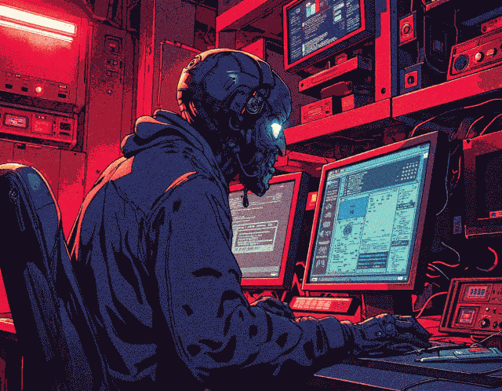

Essential Software

Essential software I'm using daily.
Retrocomputer Windows 2000
- Winamp 2.666
- Notepad++
- Totalcommander
- 7-zip
Modern Tiny10 (Windows 10)
Essentials
- Firefox
- Totalcommander
- Notepad++
- 7-zip
Multimedia & Office
- Winamp 5 & reLive
- VLC
- Blender 4.0
- OBS
- Inkscape
- Steam
- GIMP
- LibreOffice
Gamedev
- UE5
- Unity
- Godot
- git & Fork
Linux
Back to home